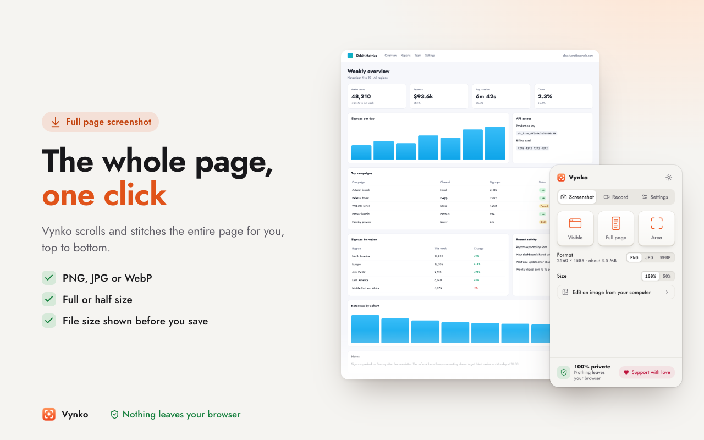

Grabador de pantalla y capturas de pantalla gratis para Chrome y Edge
Vynko hace capturas de pantalla de la página entera y graba tu pantalla con sonido, micrófono y webcam. Edita el video en el mismo navegador: corta los errores, añade música o un logo y pon tu webcam donde quieras. Difumina datos privados y anota tus capturas. Es gratis, sin marca de agua ni registro, y no hace llamadas de red, así que nada de lo que capturas sale de tu dispositivo.
Agrégalo a Chrome, es gratis Cómo usarloFunciona en Google Chrome, Microsoft Edge y otros navegadores Chromium en Windows, Mac, Linux y Chromebook. Disponible en 30 idiomas.
Captura
Grabar

Qué hace Vynko
- Captura de página enteraDesplaza y une la página completa, incluidas las imágenes de carga diferida y las apps que se desplazan dentro de un panel, como Gmail o Slack.
- Cualquier capturaEl área visible, un área seleccionada, otra ventana o toda tu pantalla. En PNG, JPG o WebP.
- Grabador de pantallaGraba una pestaña, parte de una pestaña, cualquier ventana o la pantalla completa en 720p, 1080p o 4K.
- Sonido, micrófono y webcamEl sonido de la pestaña, tu voz con medidor de nivel en vivo y una burbuja redonda con tu webcam en la esquina que elijas.
- Editor de videoSelecciona cualquier parte de una grabación, hasta el fotograma, y luego córtala, silénciala o ponle música o una imagen solo a esa parte.
- La webcam en su propia capaDespués de grabar, mueve tu webcam a donde quieras, cambia su tamaño o quítala.
- Capas y músicaPon encima un logo, una foto o un segundo video, añade música de fondo y deshaz lo que sea.
- Siempre el material originalGuardar original te da la grabación sin tocar, y la webcam en su propio archivo, por mucho que edites.
- Creador de GIFGraba directo en GIF o convierte un video en un GIF pequeño, mediano o grande, con el tamaño aproximado del archivo.
- AnotacionesFlechas, rectángulos, círculos, texto, resaltador, pasos numerados, stickers y recorte.
- Difuminar datos privadosDifumina lo que quieras a mano, o todos los correos y teléfonos de la página con un clic.
- TemporizadorEspera 3, 5 o 10 segundos para que puedas abrir un menú antes de la captura.
- Tus nombres de archivoPonle a los archivos el título de la página, el sitio, la fecha y la hora, y guárdalos en la carpeta que elijas.
Cómo usar Vynko
Cómo hacer una captura de pantalla de la página entera en Chrome
- Agrega Vynko desde Chrome Web Store y fíjalo en la barra de herramientas.
- Abre la página, haz clic en el ícono de Vynko y elige Página entera, o pulsa Alt+Shift+F.
- Vynko desplaza la página, oculta los encabezados fijos para que no se repitan y abre el resultado en el editor. Haz clic en Descargar o Copiar.

Cómo grabar la pantalla con audio en Chrome
- Haz clic en el ícono de Vynko y abre Grabar.
- Elige Pestaña para esta pestaña con su sonido, Área para una parte de ella, o Elegir para cualquier ventana o toda tu pantalla.
- Activa Micrófono para añadir tu voz y Webcam para añadir una burbuja con tu cámara. Elige en qué esquina y con qué tamaño empieza.
- Haz clic de nuevo en el ícono y pulsa Detener. El video se abre en el editor, listo para editarlo y descargarlo en MP4 o WebM.
Cómo grabar la pantalla en GIF
En Grabar, elige el formato GIF y graba como siempre. O graba un video y luego, en el editor, haz clic en GIF y elige pequeño (480 px), mediano (640 px) o grande (960 px). Cada tamaño muestra el peso aproximado del archivo antes de guardar.
Cómo recortar, cortar o editar una grabación de pantalla
- Arrastra sobre los clips o sobre la regla fina que hay encima para seleccionar una parte. O pulsa [ donde empieza y ] donde termina. , y . avanzan o retroceden un fotograma.
- Haz clic en Cortarla para quitarla, en Silenciarla para dejarla sin sonido, o en Añadir música aquí y Añadir una capa aquí para poner una canción, un logo o un segundo video solo en esa parte.
- Pulsa S para dividir un clip en dos, arrastra las capas en la vista previa para colocarlas y deshaz lo que sea con Ctrl+Z.
- Haz clic en Descargar. Guardar original siempre está ahí si quieres la grabación sin tus cambios.

Cómo mover, cambiar de tamaño o quitar tu webcam
Vynko graba tu webcam como una capa aparte, no pegada al video. En el editor, haz clic en la webcam redonda de la vista previa. Arrástrala para moverla, arrastra su esquina para hacerla más grande o más pequeña, o haz clic en Eliminar capa para quitarla. Si desactivas la edición antes de guardar, o grabas un GIF, la webcam se dibuja en el video en la esquina que elegiste.

Cómo hacer una captura de otra ventana o de toda la pantalla
En Captura, elige Ventana y luego selecciona la ventana o la pantalla en el cuadro para compartir de tu navegador. La imagen se abre en el editor.
Cómo difuminar correos y teléfonos en una captura de pantalla
Haz una captura de pantalla. Si la página muestra correos o teléfonos, el editor muestra Difuminar datos privados. Con un clic los cubres todos. También puedes arrastrar la herramienta Difuminar sobre cualquier otra cosa, como nombres, claves o números de tarjeta.

Atajos de teclado
| Acción | Windows, Linux, ChromeOS | Mac |
|---|---|---|
| Capturar el área visible | Alt+Shift+V | Option+Shift+V |
| Capturar la página entera | Alt+Shift+F | Option+Shift+F |
| Capturar un área seleccionada | Alt+Shift+A | Option+Shift+A |
| Iniciar o detener la grabación de la pestaña | Alt+Shift+R | Option+Shift+R |
Cámbialos en chrome://extensions/shortcuts.
Privado desde el diseño
No tengo ningún servidor para Vynko, así que tus datos no tienen a dónde ir. La extensión no tiene analíticas, anuncios ni rastreo, y no carga código de internet. No pide permisos de host, y su política de seguridad de contenido solo permite conexiones a URL locales de tipo blob y data. Tu webcam y tu micrófono solo van a la grabación que guardas.
Vynko no hace ninguna llamada de red. Las capturas, las grabaciones y las ediciones se hacen en tu computadora, y funciona sin conexión.
Compruébalo tú mismo: haz clic derecho en el popup de Vynko, elige Inspeccionar, abre la pestaña Red y luego haz una captura y graba un clip. La pestaña Red se queda vacía.

Lee la política de privacidad y los términos completos.
Guías
- Captura una pestaña de Chrome con un clicCaptura justo lo que ves en la pestaña actual, sin las barras del navegador, y luego márcala, difumina los datos privados y guárdala o cópiala.
- Captura de pantalla de página completa de cualquier webVynko desplaza la página por ti, espera a que carguen las imágenes diferidas, oculta los encabezados fijos para que no se repitan y lo une todo en una sola imagen larga.
- Captura de pantalla de cualquier ventana o aplicaciónNo solo páginas web: captura otra ventana del navegador, una aplicación de escritorio o una pestaña que no estás viendo, con el selector para compartir de tu propio navegador.
- Captura de toda la pantallaCaptura todo lo que hay en un monitor: el escritorio, todas las ventanas y la barra de tareas, y luego recórtalo o anótalo en el editor.
- Graba tu pantalla con sonidoGraba una pestaña con su propio sonido, una ventana o toda la pantalla con el audio del sistema, y añade tu voz desde el micrófono, con barras de nivel en directo para ver que el sonido entra.
- Graba tu pantalla con la webcamAñade una burbuja redonda de webcam a las grabaciones de pestaña, ventana o pantalla, y luego muévela, cambia su tamaño o quítala en el editor.
Vynko frente a otros grabadores
| Vynko | Grabadores de pantalla gratis típicos | |
|---|---|---|
| Precio | Gratis, sin versión de pago | Versión gratis con límites |
| Marca de agua | Nunca | A menudo en los planes gratis |
| Cuenta | No hace falta | Casi siempre obligatoria |
| Dónde quedan los archivos | Solo en tu dispositivo | A menudo se suben a la nube del proveedor |
| Límite de tiempo | Ninguno | A menudo de 5 a 15 minutos |
| Edición de video | Incluida, en tu dispositivo | A menudo en línea o de pago |
| Llamadas de red | Ninguna | Subidas, analíticas, sincronización de cuenta |
Preguntas frecuentes
¿Vynko es realmente gratis y sin marca de agua?
Sí. Sin anuncios, sin marca de agua, sin límite de tiempo y sin versión de pago. Si te ahorra tiempo, hay un enlace opcional para donar.
¿Vynko sube mis grabaciones o capturas de pantalla?
No. Las capturas se crean en tu navegador y se guardan en tu dispositivo.
¿Necesito una cuenta?
No. No hay que registrarse ni iniciar sesión.
¿Puede grabar el audio del sistema?
Sí. Activa Sonido del sistema en la pestaña Grabar, elige Ventana o pantalla, selecciona Toda la pantalla y marca Compartir audio del sistema. Así se graba el sonido de otras apps, como una llamada de WhatsApp o Zoom. En Mac necesitas macOS 14.2 o posterior y un Chrome reciente. Una sola ventana no tiene sonido propio que compartir, así que Vynko te ofrece añadir el sonido de tu computadora. Las grabaciones de pestaña siempre incluyen el sonido de la pestaña.
¿Puedo grabar mi webcam junto con la pantalla?
Sí. Activa Webcam en la pestaña Grabar y elige en qué esquina y con qué tamaño empieza. La webcam es una capa aparte, así que en el editor puedes moverla a donde quieras, cambiar su tamaño o quitarla.
¿Puedo editar solo una parte de un video?
Sí. Arrastra sobre la línea de tiempo para seleccionar una parte, hasta un solo fotograma. Luego córtala, silénciala o ponle música o una imagen solo a esa parte.
¿Puedo recuperar la grabación original después de editar?
Sí. Guardar original siempre está en el editor. Descarga la grabación tal como era, y además la webcam en su propio archivo.
¿Dónde se guardan mis archivos?
En tu carpeta Descargas, o en una carpeta dentro de ella que eliges en Ajustes.
¿Funciona sin conexión?
Sí. Todo lo que necesita está dentro de la extensión.
¿Funciona en Microsoft Edge?
Sí. Vynko funciona en Chrome, Edge y otros navegadores Chromium.
¿Cómo reporto un error o pido una función?
Escribe a mishravinay112@gmail.com.